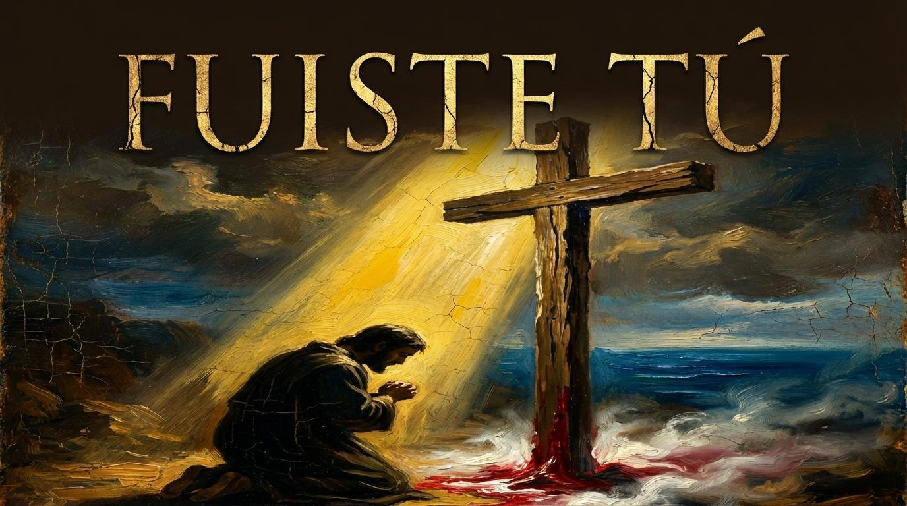
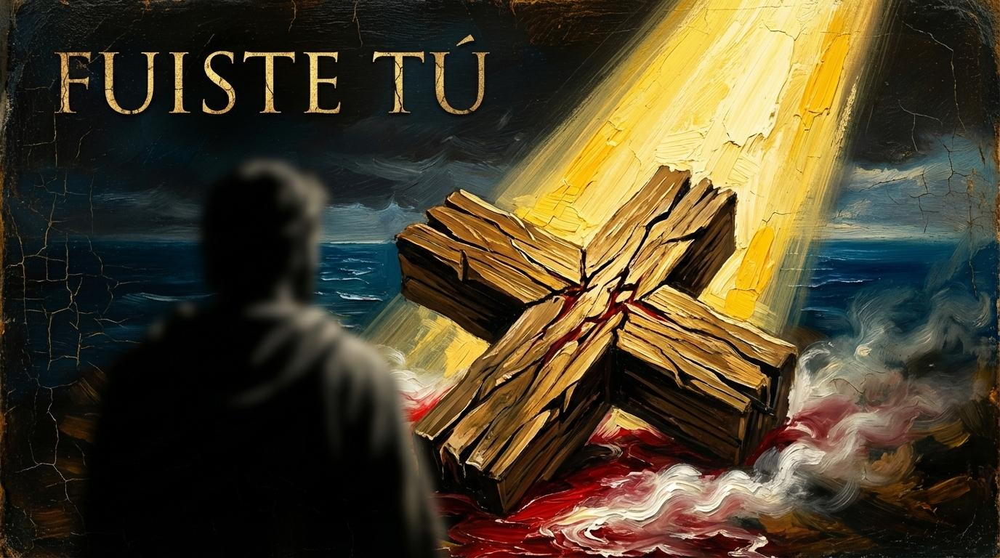
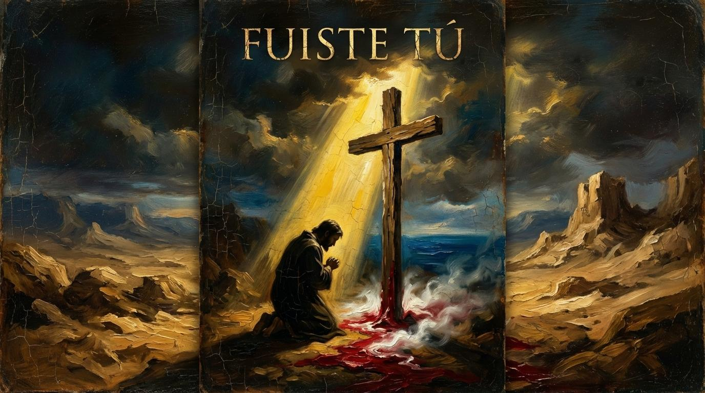
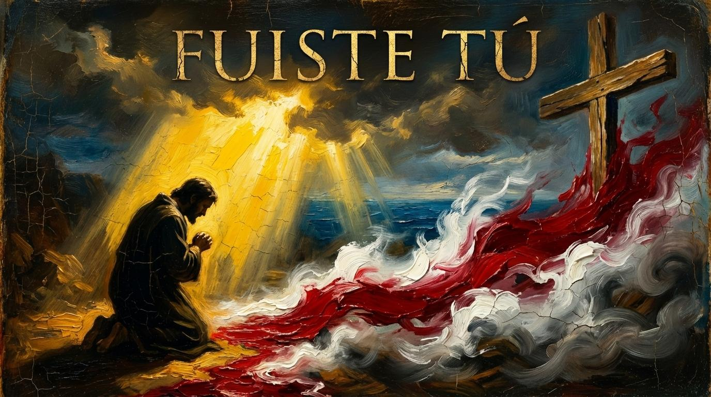
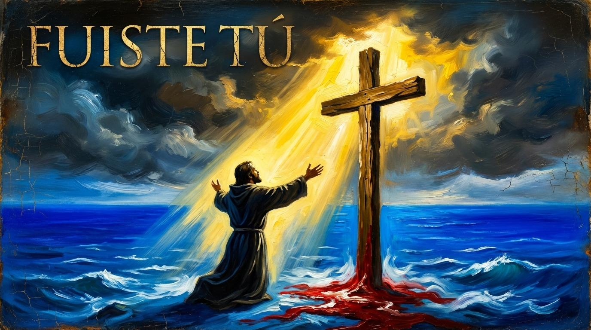
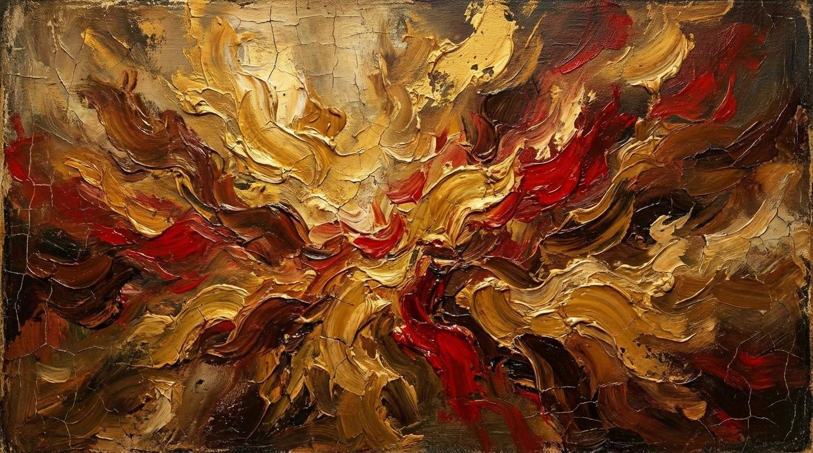

Fuiste Tú
"It was you, thank you Lord for everything."

I did not help you when I saw you on the cross, carrying that weight, that lightless pain; my steps fell silent before your suffering, today by the wood, I want to redeem myself.

I closed my eyes while everything passed, I denied with my hand when your voice called; I ran to the desert, to the shadow I fled, among my miseries, there I hid.

It was you who looked at me, it was you who spoke to me, who with his embrace evaporated my shadow, who with his blood forgave my sin.

Guilt weighs me down, but you carry it; in your gaze my soul finds calm; I don't deserve so much, but here I am, by the wood feeling your love.
The echo of your voice came to wake me, you removed the blindfold, you showed me the sea; in the feat of your great sacrifice, today I embrace the wood and shout!

It was you who looked at me... (Final Redemption)

Redemption
Redención
An explosion of light and mercy, where the canvas of the past is washed clean by the blood and the glory of the divine master.
THE END
FIN
In the chiaroscuro of the soul, where shadows once reigned, the Master has laid His hand.
Every stroke of guilt has been softened by the oil of mercy, and the dark wood of the cross reflects now a light of eternal gold.
It was You, Lord, who turned the cracked canvas of my life into a portrait of redemption.